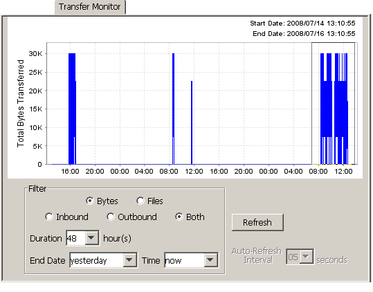
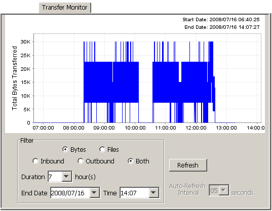
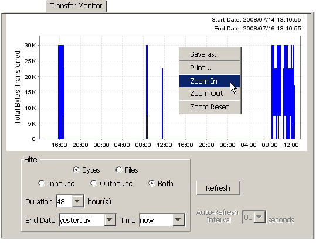

| User Groups, Transfer Monitors, and System Counters / About Transfer Monitor | |
Cleo VLNavigator provides mechanisms for displaying finer granularity, especially when there are many data points within a specified time range. As mentioned in the previous section, durations of less than an hour can be specified to narrow the range of the plotted data points by optionally changing the End Date and/or End Time. Additionally, the data range can be zoomed in by dragging the mouse from left to right over a range of data points until the desired granularity is achieved.
In the following example, the range before 08:00 and after 12:00 has been selected (denoted by the gray box around the selected area):

Then, the following updated graph is displayed:

This procedure can be done multiple times until the desired granularity is reached.
Another option for shrinking or expanding the displayed data set is to use the popup menu options available by right-clicking anywhere on the graph to Zoom In, Zoom Out or Reset the display back to the original graph:

Whatever method is chosen for zooming, Refresh will also reset the display to the original non-zoomed graph.